Benchmark
How We Ranked First in the HRT (Hudson River Trading) and Partcl Macro Placement Challenge
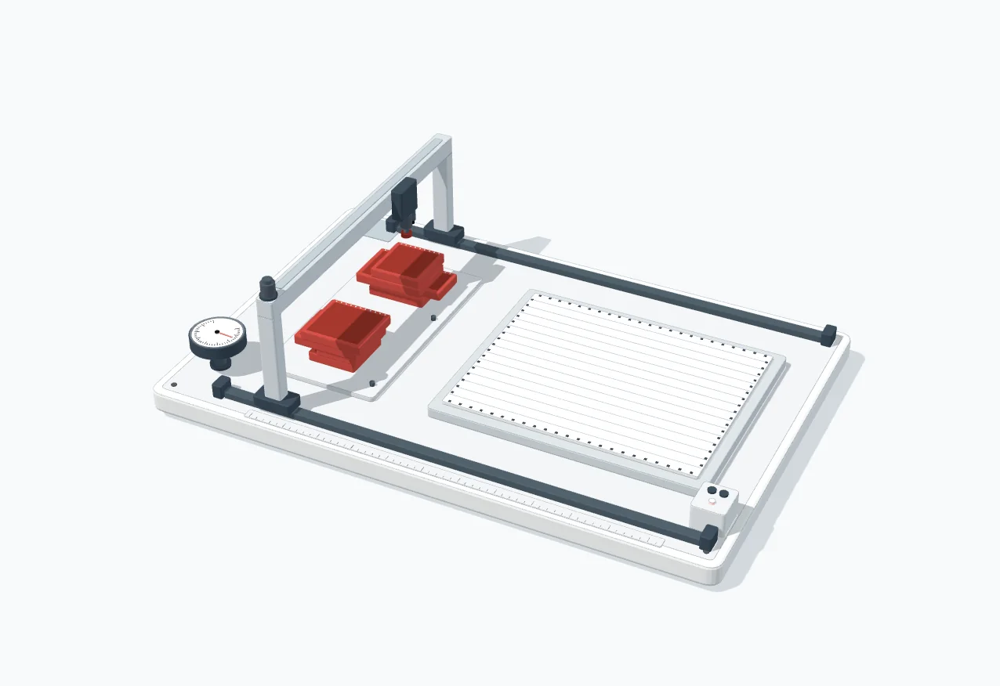
A technical write-up of the approach behind our verified rank-1 score on the IBM macro-placement benchmarks.
HRT (Hudson River Trading) and Partcl (backed by Khosla Ventures) ran the Macro Placement Challenge to evaluate macro placement systems on the IBM benchmark suite. The objective was to generate legal placements with the lowest average proxy cost across the designs, with zero hard-macro overlaps and a fixed runtime budget.
Our submission ranked first on the verified leaderboard with an average proxy cost of 0.9507 and zero hard-macro overlaps. This article documents how we started, what we tried, and how the final approach evolved.
Official contest repository: partcleda/macro-place-challenge-2026.
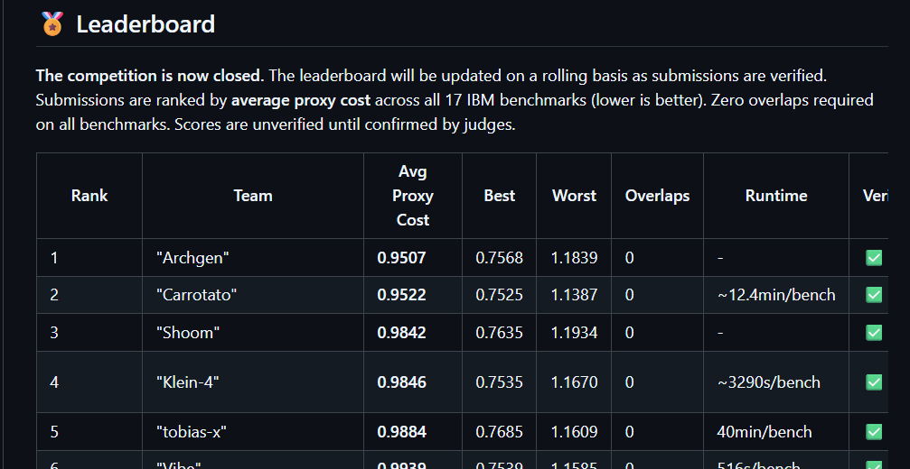
That contest structure shaped the whole project.
The Problem
Macro placement is the part of physical design where large blocks, such as memories and IP macros, are assigned locations on the chip canvas. The placement must satisfy hard geometric constraints, but geometry alone is not enough. A floorplan can look clean to a human eye and still fail later when detailed routing spends hours exposing narrow channels, local overflow, and insufficient routing capacity.
The challenge compressed that downstream pain into a faster public proxy:
proxy = wirelength + 0.5 * density + 0.5 * congestionLower is better.
For the exact scorer definitions, see the challenge SETUP.md and the TILOS MacroPlacement proxy-cost documentation, which describe normalized HPWL, top-10% grid density, and top-5% routing congestion with smoothing.
The benchmarks gave us hard macros, soft macros, a canvas, and a netlist. Hard macros had to stay inside the canvas and could not overlap. The solution also had to run under the contest time limit for every benchmark.
At the start, it was tempting to think of the objective as a balanced wirelength, density, and congestion problem. The component tables quickly corrected that assumption.
In strong late-stage runs, wirelength was already around 0.07 to 0.08. Congestion was still large. One representative decomposition looked like this:
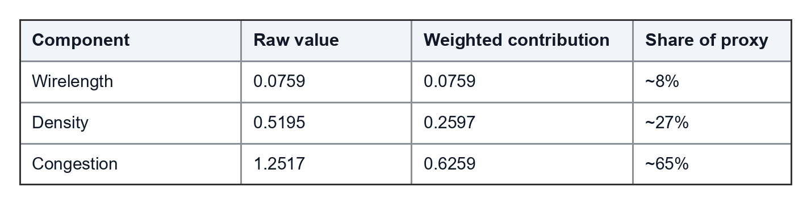
That is the point where the optimization target changed. We still had to protect HPWL, but the score was moving through density and congestion.
Evolution of the Approach
With the objective and component bias clear, the implementation evolved through the following phases.
Phase 1: Baseline Macro Placement
Our first approach was straightforward: run a basic macroplacer, legalize hard macros, evaluate the proxy, and compare against the suite. It gave us valid placements and early full-suite averages in the rough 1.4 to 1.5 range.
That baseline was useful because it made the problem measurable. We were not mainly failing because the placer could not make legal floorplans. We were failing because the legal floorplans still concentrated too much routing and density pressure.
The first reliable improvements came from exact-scored repair:
keep a legal hard-macro placement,
make candidate moves,
reject hard-macro overlaps,
score the candidate with the same proxy components,
accept only if the measured proxy improved,
validate on all designs, not just one benchmark.
This moved the system into the low 1.2 range. More importantly, it established the rule that survived to the end: no candidate mattered until it passed legality, exact scoring, runtime, and full-suite checks.
Phase 2: Auto-Research Harness
Inspired by Andrej Karpathy's framing of auto-research, we wrapped the placer in a simple experiment loop: propose a change, run the suite, parse the metrics, and promote only if the full result improved.
The harness tracked proxy, wirelength, density, congestion, overlap count, and runtime for every candidate. Invalid runs, timeouts, and partial-suite wins were rejected.
propose candidate
run benchmark evaluations
collect proxy components
reject invalid or timeout cases
compare against current baseline
promote only full-suite improvements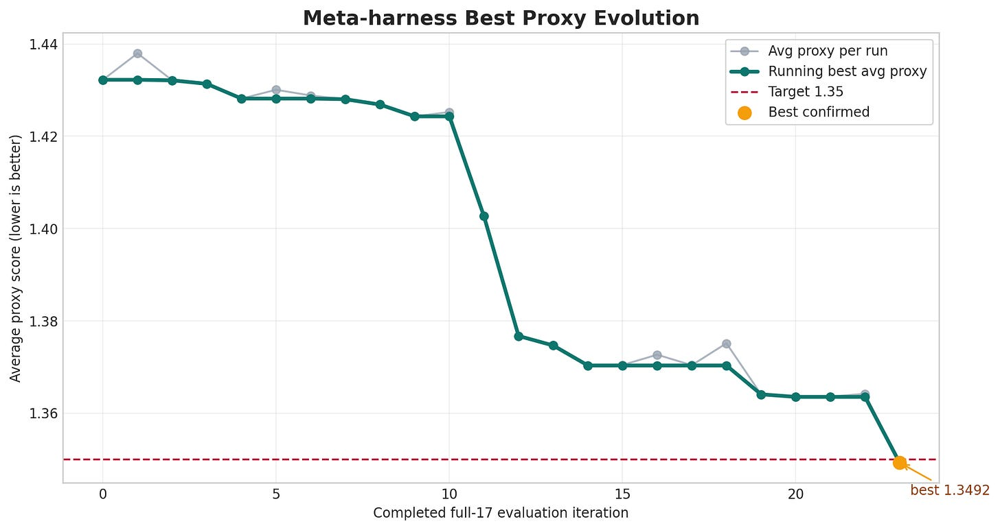
The graph is from the early auto-research phase. It shows the main point: progress came from repeated full-suite measurements, not from judging placements visually.
Phase 3: Fast Runtime Proxy Evaluation
We could not call the public scorer after every possible move, so we built an incremental proxy evaluator for local repair. For each trial macro move, it updated only the affected state:
HPWL for nets touched by the moved macro,
density for grid cells whose overlap area changed,
congestion from routing-demand and macro-blockage caches,
hard-macro overlap checks before acceptance,
undo state so rejected moves restored the previous proxy state.
A move was kept only if the measured proxy improved. The subtle part was numerical compatibility. A placement that looked legal in float64 local geometry could still become an overlap after the official float32 scorer rounded positions. We moved legality and grid calculations toward scorer-compatible float32 behavior and added explicit clearance gaps, so “zero overlaps” locally matched zero overlaps in final scoring.
Phase 4: Multi-Start Search
The naive multi-start version was simple: generate starts, run repair, pick the best. That helped, but blind restarts waste the one-hour benchmark budget.
The useful version was multi-seam search. We generated physically different starting basins, legalized them, prescored proxy and congestion, and sent only the best few into long repair.
The seed portfolio included:
the original legal warm start,
an analytical seed driven by net connectivity, density pressure, and routing-aware weights,
blend seeds between the original placement and the analytical placement,
expansion seeds that pushed movable macros away from the placement centroid,
synthetic-clearance seeds,
gradient-descent and Nesterov-style continuous basins,
route-channel and gap-fill basins tested during plateau work,
Xplace-RA route-aware variants with different safety margins,
and fallback exact-repair candidates when route-aware candidates failed gates.
One seed-attribution experiment made this concrete. It ran 17 / 17 public IBM designs with 10 workers and evaluated 12 seed algorithms: raw legalized starts, analytical starts, blend starts, expansion starts, route-channel starts, and a few exploratory heuristic starts.
The winners were not evenly distributed:
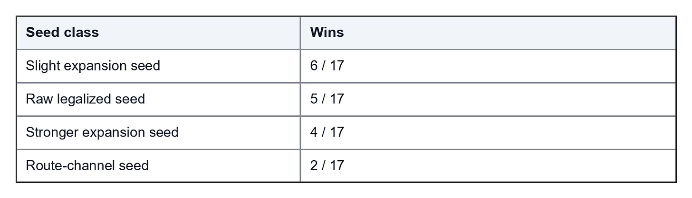
That result was useful because it removed guesswork. Expansion, raw legalized, and route-channel basins were worth keeping. The exploratory heuristic seeds did not beat those seed classes. The traced phases also showed that exact congestion refinement was the best final traced stage for every design in that experiment.
The important step was prescoring. A seed was not allowed to consume the full budget just because it looked interesting. The harness legalized it, computed proxy components, ranked by proxy and congestion, then polished only a small queue.
The pattern looked like this:
generate seed basins
legalize hard macros
prescore proxy and congestion
keep the best few legal seeds
spend repair time on the winners
fall back if a candidate source failsThat made multi-start a seed-selection problem rather than a random-restart problem.
Phase 5: Synthetic Clearance
One of the most important seed-generation approaches came from a simple physical observation: the baseline was too packed in the wrong places.
We started adding synthetic clearance to smaller macros before legal repair. The useful configuration selected movable macros up to the 97th percentile by area, added artificial separation, and used a vectorized Jacobi-style push-apart step before hard-macro legalization.
Key settings in the final clearance approach were:
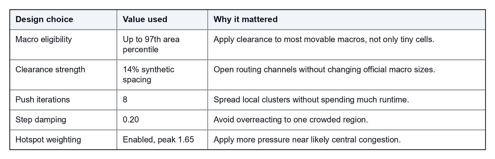
The point was not to change official macro sizes. The point was to create routing slack before exact repair. The legalizer then repaired hard-hard conflicts using pairwise push-apart, conflict-component handling, spiral search, emergency clearing, and displacement reduction.
Synthetic clearance worked when it created better candidate basins. It failed when it pushed connected objects too far apart. That is why it stayed behind exact proxy acceptance.
Phase 6: Soft-Macro Repair
Early versions treated soft macros mostly as cleanup. That was not enough.
Soft macros can move without reopening the hard-macro legality problem. That made them useful late-stage actuators for density and congestion. A hard macro move can destroy a channel or create a hard overlap. A soft-macro move can relieve routing pressure with much lower geometric risk.
The strongest version was interleaved coordinate descent:
hard and soft macros shared one evaluator state,
hard moves were rejected if hard-hard legality failed,
soft moves were allowed more freedom,
both classes were accepted only on exact proxy improvement,
large steps used quick first-improvement,
smaller steps searched multiple directions and kept the best,
and the run spent most of the benchmark budget on this measured repair.
The practical settings reflected that priority:
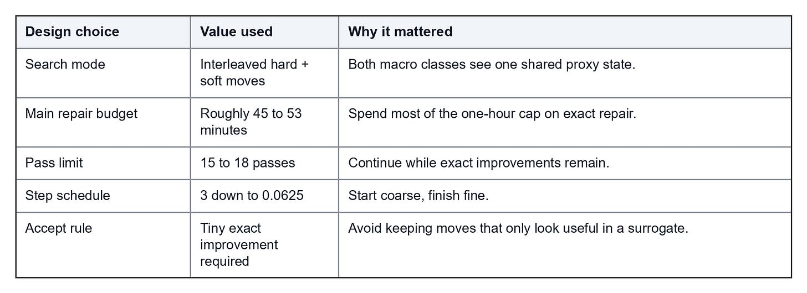
At this point, the flow had the pieces needed for measured repair: seed selection, exact local repair, soft-macro congestion control, and runtime allocation.
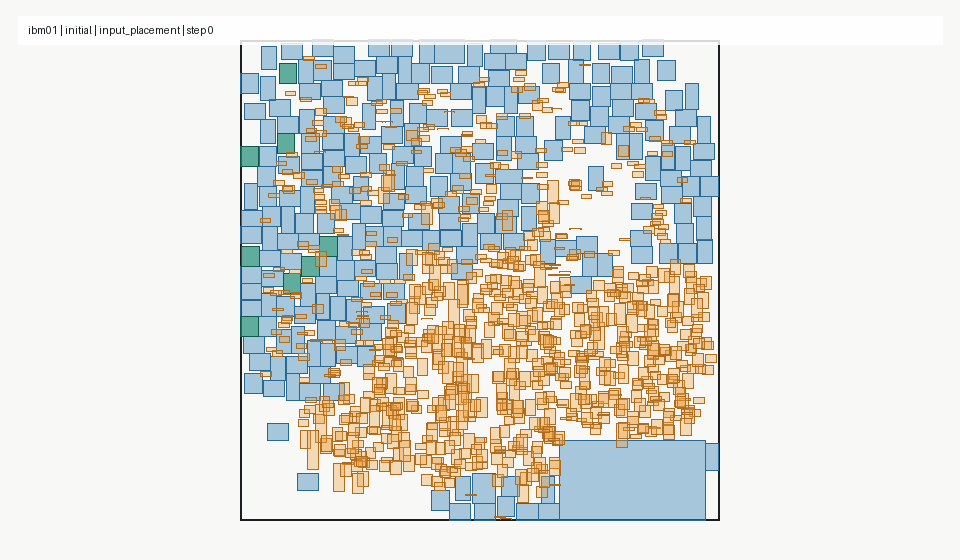
Phase 7: Congestion-Weighted Search
The official proxy was fixed:
wirelength + 0.5 * density + 0.5 * congestionBut the internal search objective did not have to rank candidate proposals with the same naive balance at every stage. Once we saw congestion dominating the remaining score, we tested congestion-weighted repair. In the late congestion-weighted repair line, a promoted setting used:
WL + density + 2.5 * congestionThat did not replace final evaluation. It changed proposal pressure. A candidate still had to survive the real proxy gates before it mattered.
This distinction was important. The internal objective could bias the search toward opening routing capacity. The official proxy still decided whether the placement improved.
The promoted congestion-weighted approach reached a full-suite average around 1.0471 with all designs valid and under the time cap. The useful change was proposal ranking, not the final scoring rule.
Phase 8: Plateau Escape
After enough exact repair, the optimizer reached plateaus: many legal candidates were evaluated, but very few were accepted. At that point, running the same move class longer was not enough.
The later GPU logs made the scale clearer:
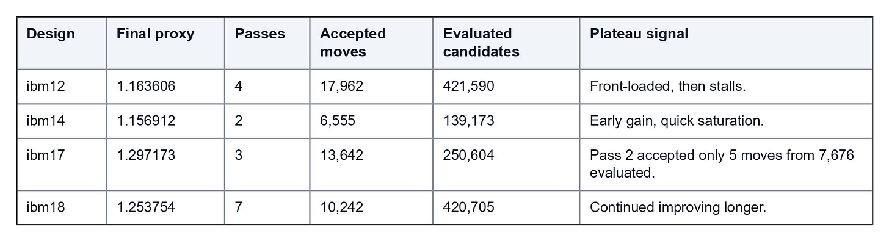
Across the GPU repair logs, the system evaluated 11,674,931 candidates and accepted 229,169 moves, an accept rate of 1.96%. That telemetry drove the next step: change the proposal distribution, not the acceptance rule.
The plateau escape move classes were:
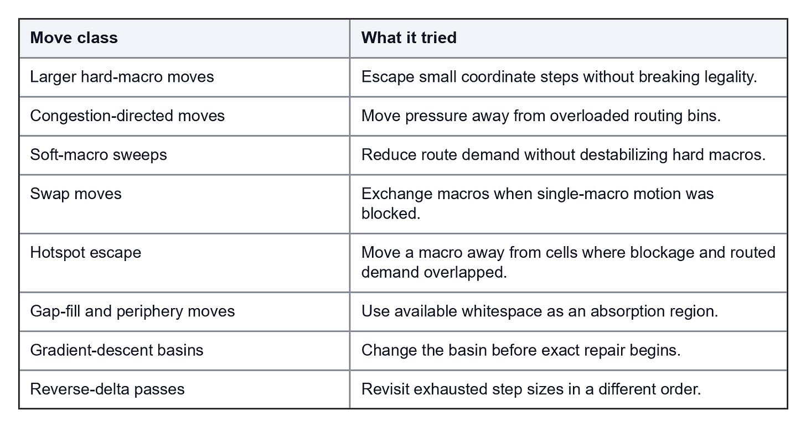
The evaluator stayed strict. We changed how candidates were generated, not what counted as success.
Phase 9: GPU Acceleration
Early in the contest, we assumed GPU throughput would decide how many useful candidates we could evaluate inside one hour. Development runs used NVIDIA L4 workers; the public evaluation environment listed an NVIDIA RTX 6000 Ada 48GB with AMD EPYC 9655P CPU, 16 cores, and 100GB memory. The contest Docker base was pytorch/pytorch:2.5.1-cuda12.4-cudnn9-runtime.
The main change was moving candidate generation and ranking out of Python loops:
overlap push-apart and tensor-heavy proposal scoring moved to PyTorch CUDA tensors,
per-design candidate sources ran in parallel where hardware allowed,
Triton kernels were tested for batched top-k candidate ranking,
the exact proxy evaluator stayed as the legality and acceptance gate.
In a congestion-heavy GPU repair setting, the proposal stage ranked 80 macros x top-160 proposals, or 12,800 candidate slots, before exact accept/reject filtering. Triton experiments batched 8,192 to 16,384 proposals per pass. The GPU work did not replace scoring; it made scoring spend time on better candidates.
Phase 10: Xplace-RA Route-Aware Seeds
Xplace is a GPU-accelerated analytical placer from CUHK EDA. We used a patched Xplace checkout as a route-aware seed generator, not as the final scorer. This is different from XLA, or Accelerated Linear Algebra; XLA was not part of this flow.
In our flow, Xplace-RA meant:
export the current benchmark through the LEF/DEF bridge,
run patched Xplace to produce route-aware seed placements,
map the result back into the challenge placement format,
gate it with overlap, density, congestion, and finite-coordinate checks,
run exact-scored repair only if the seed beat the baseline candidate.
The score progression looked like this:
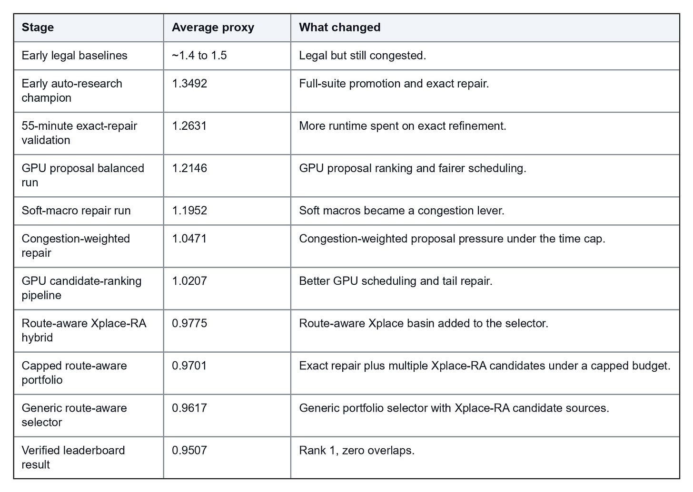
The submit-ready selector was especially important because it stayed generic: 17 / 17 designs valid, 0 / 17 overlap failures, average wirelength 0.075941, density 0.519471, congestion 1.251706, and a 3300-second placement cap.
The route-aware build image used pytorch/pytorch:2.5.1-cuda12.4-cudnn9-devel. The Docker path cloned cuhk-eda/Xplace into /opt/Xplace, copied our patch bundle on top, built it with CUDA architecture 89, and set EVOXRAXPLACE_ROOT=/opt/Xplace. If patched Xplace was missing or failed gates, the selector used the in-house exact-repair candidate instead.
That fallback logic was part of the algorithm. A strong optional candidate source is useful only if failure does not poison the final placement.
Phase 11: Triton Candidate Ranking
Triton was used as an experimental kernel path for candidate ranking. The goal was specific: batch many proposals, rank them on GPU, and feed only promising candidates into the exact evaluator.
The first modes did not beat the baseline, so Triton stayed gated:
keep baseline direction candidates,
union Triton-ranked candidates with the baseline set,
require an objective margin before adding extra Triton candidates,
compare every panel against non-Triton baseline runs.
The lesson was simple: faster candidate generation helps only when it increases accepted improvements.
The Final System
The runtime-controlled flow looked like this:
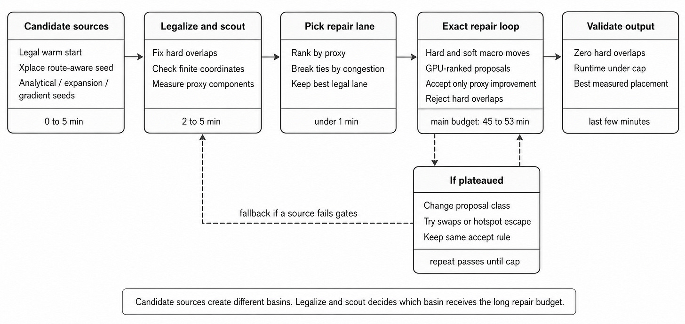
What We Learned
Macro placement is not solved by a floorplan that only looks clean. The useful question is whether the placement leaves routing capacity where the netlist needs it.
Our main takeaways were:
Optimize the proxy components, not just the scalar score.
Treat congestion as the primary target once HPWL is low.
Use multi-start only when starts represent different physical basins.
Keep soft macros in the repair loop; they are useful congestion actuators.
Escape plateaus by changing proposal classes, not by loosening acceptance.
Use GPU acceleration to rank more candidates, while exact scoring decides what survives.
Keep Xplace, Triton, and gradient descent behind legality and full-suite validation.
Match scorer precision before claiming zero overlaps.
The final verified leaderboard score was a rank-1 average proxy cost of 0.9507 with zero hard-macro overlaps. The technical process behind that score was straightforward in principle: propose broadly, score exactly, accept carefully, and validate across the full benchmark suite.
The team behind Archgen Submission :
Naveen Venkat, Hariharan Ayappane, and Jishnu Madhav.
Visit ArchGen.tech for more details.
Disclaimer: This article was written with the help of AI.